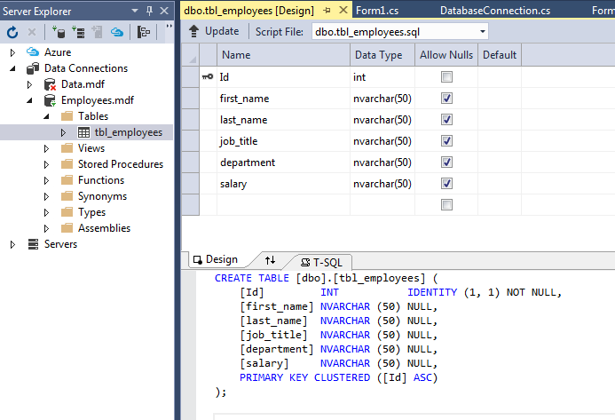
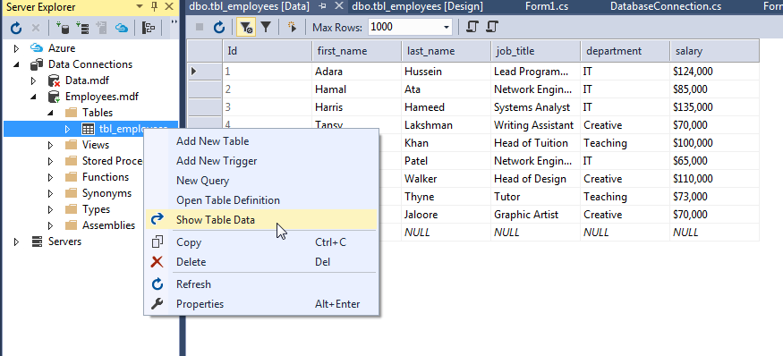
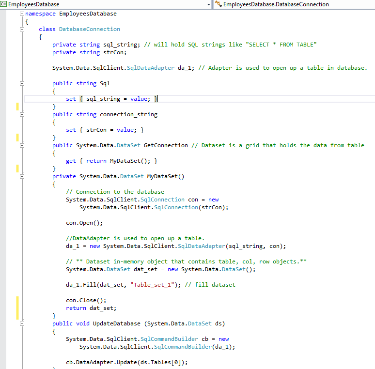
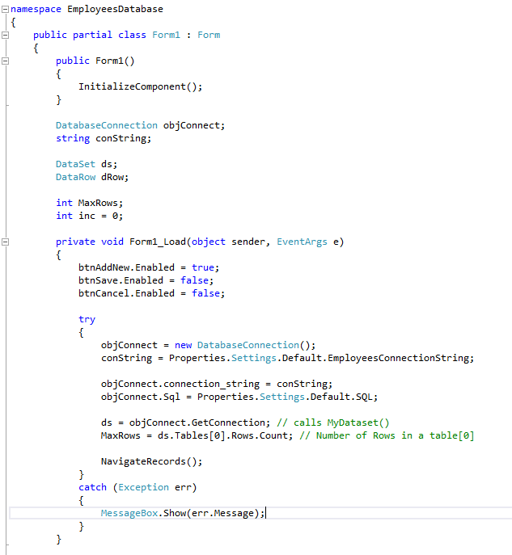
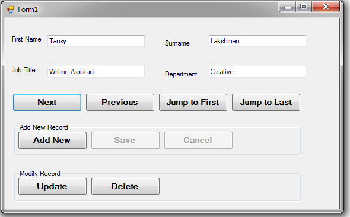
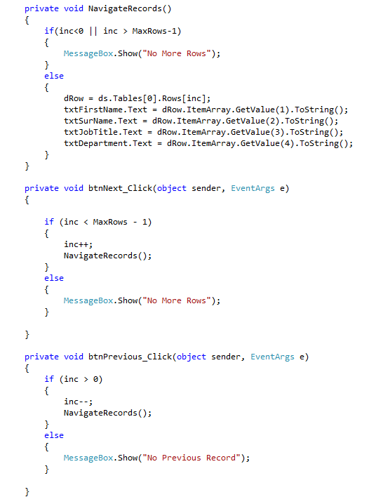
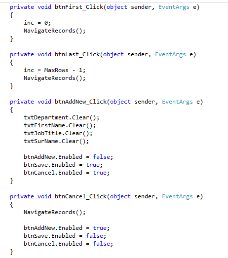
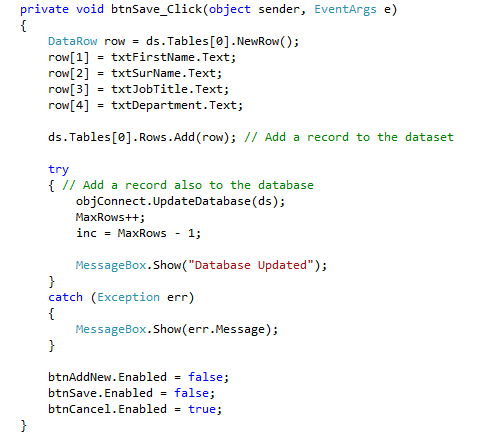
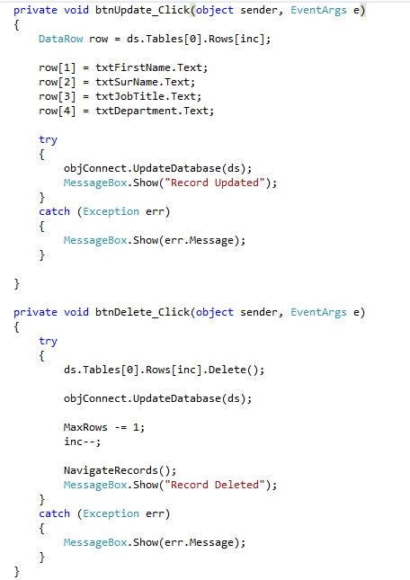

Winform C# SQL Server Database
Updated on September 25th, 2017
----------------------- This posting is draft version and it will be completed soon ------------------------
Many programs need database. It means data should be stored somewhere outside program, and database should be accessible for valid users to delete or insert a new data. This post deals with basic database techniques based on SQL Server Express. Winform C# would be a good tool to observe how server database gets accessed and updated.
Here's the SQL Server summary:
- SQL Server Database Property
- SQL Server Data Entry
- Create Class for SQL Connection
- Design Winform and load data
- Update Database using Winform
1. SQL Server Database Property

2. SQL Server Data Entry
3. Create Class for SQL Connection
4. Design Winform and load data

5. Methods for updating Database using Winform



Download EmployeesDatabase.exe